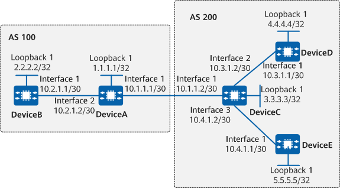

Example for Configuring Prefix-based BGP ORF
Networking Requirements
On the network shown in Figure 1, DeviceA and DeviceB belong to AS 100, and DeviceC, DeviceD, and DeviceE belong to AS 200. DeviceA requires DeviceC to send only routes that match the import routing policy of DeviceA, and DeviceC does not expect to maintain a separate export routing policy for DeviceA. To meet these requirements, configure prefix-based BGP ORF.

In this example, interface 1, interface 2, and interface 3 represent 10GE0/0/1, 10GE0/0/2, and 10GE0/0/3, respectively.

To complete the configuration, you need the following data:
In AS 100: DeviceA's router ID: 1.1.1.1; DeviceB's router ID: 2.2.2.2
In AS 200: DeviceC's router ID: 3.3.3.3; DeviceD's router ID: 4.4.4.4; DeviceE's router ID: 5.5.5.5
Precautions
During the configuration, note the following:
- To improve security, you are advised to deploy BGP security measures. For details, see "Configuring BGP Authentication." Keychain authentication is used as an example. For details, see Example for Configuring Keychain Authentication for BGP.
Configuration Roadmap
The configuration roadmap is as follows:
Establish an EBGP peer relationship between DeviceA and DeviceC. Establish IBGP peer relationships between DeviceA and DeviceB, between DeviceC and DeviceD, and between DeviceC and DeviceE.
Configure an import routing policy that is based on an IP prefix list on DeviceA, and enable prefix-based BGP ORF on DeviceA and DeviceC.
Procedure
- Assign an IP address to each interface.
Assign an IP address to each interface according to Figure 1. For detailed configurations, see Configuration Scripts.
- Configure BGP peer relationships.
# Configure DeviceA.
[DeviceA] bgp 100 [DeviceA-bgp] router-id 1.1.1.1 [DeviceA-bgp] peer 10.2.1.1 as-number 100 [DeviceA-bgp] peer 10.1.1.2 as-number 200 [DeviceA-bgp] ipv4-family unicast [DeviceA-bgp-af-ipv4] import-route direct [DeviceA-bgp-af-ipv4] quit [DeviceA-bgp] quit
# Configure DeviceB.
[DeviceB] bgp 100 [DeviceB-bgp] router-id 2.2.2.2 [DeviceB-bgp] peer 10.2.1.2 as-number 100 [DeviceB-bgp] quit
# Configure DeviceC.
[DeviceC] bgp 200 [DeviceC-bgp] router-id 3.3.3.3 [DeviceC-bgp] peer 10.1.1.1 as-number 100 [DeviceC-bgp] peer 10.3.1.1 as-number 200 [DeviceC-bgp] peer 10.4.1.1 as-number 200 [DeviceC-bgp] ipv4-family unicast [DeviceC-bgp-af-ipv4] import-route direct [DeviceC-bgp-af-ipv4] quit [DeviceC-bgp] quit
# Configure DeviceD.
[DeviceD] bgp 200 [DeviceD-bgp] router-id 4.4.4.4 [DeviceD-bgp] peer 10.3.1.2 as-number 200 [DeviceD-bgp] quit
# Configure DeviceE.
[DeviceE] bgp 200 [DeviceE-bgp] router-id 5.5.5.5 [DeviceE-bgp] peer 10.4.1.2 as-number 200 [DeviceE-bgp] quit
- Configure an import routing policy that is based on an IP prefix list on DeviceA.
# Configure DeviceA.
[DeviceA] ip ip-prefix 1 index 10 permit 10.3.1.0 24 less-equal 32 [DeviceA] bgp 100 [DeviceA-bgp] peer 10.1.1.2 ip-prefix 1 import [DeviceA-bgp] quit
# Check information about the routes advertised by DeviceC.
[DeviceC] display bgp routing-table peer 10.1.1.1 advertised-routes BGP Local router ID is 3.3.3.3 Status codes: * - valid, > - best, d - damped, x - best external, a - add path, h - history, i - internal, s - suppressed, S - Stale Origin : i - IGP, e - EGP, ? - incomplete RPKI validation codes: V - valid, I - invalid, N - not-found Total Number of Routes: 7 Network NextHop MED LocPrf PrefVal Path/Ogn *> 3.3.3.3/32 10.1.1.2 0 0 200? *> 10.1.1.0/30 10.1.1.2 0 0 200? *> 10.1.1.1/32 10.1.1.2 0 0 200? *> 10.3.1.0/30 10.1.1.2 0 0 200? *> 10.3.1.1/32 10.1.1.2 0 0 200? *> 10.4.1.0/30 10.1.1.2 0 0 200? *> 10.4.1.1/32 10.1.1.2 0 0 200?
# Check information about the routes accepted by DeviceA.
[DeviceA] display bgp routing-table peer 10.1.1.2 received-routes BGP Local router ID is 1.1.1.1 Status codes: * - valid, > - best, d - damped, x - best external, a - add path, h - history, i - internal, s - suppressed, S - Stale Origin : i - IGP, e - EGP, ? - incomplete RPKI validation codes: V - valid, I - invalid, N - not-found Total Number of Routes: 2 Network NextHop MED LocPrf PrefVal Path/Ogn *> 10.3.1.0/30 10.1.1.2 0 0 200? *> 10.3.1.1/32 10.1.1.2 0 0 200?
When prefix-based BGP ORF is not enabled, DeviceC sends seven routes. Of these, DeviceA accepts only two routes. This is because DeviceA applies the configured import routing policy to the seven routes.
- Enable prefix-based BGP ORF.
# Enable prefix-based BGP ORF on DeviceA.
[DeviceA] bgp 100 [DeviceA-bgp] peer 10.1.1.2 capability-advertise orf ip-prefix both [DeviceA-bgp] quit
# Enable prefix-based BGP ORF on DeviceC.
[DeviceC] bgp 200 [DeviceC-bgp] peer 10.1.1.1 capability-advertise orf ip-prefix both [DeviceC-bgp] quit
Verifying the Configuration
# Check information about prefix-based BGP ORF negotiation on DeviceA.
[DeviceA] display bgp peer 10.1.1.2 verbose
BGP Peer is 10.1.1.2, remote AS 200
Type: EBGP link
BGP version 4, Remote router ID 3.3.3.3
Update-group ID: 1
BGP current state: Established, Up for 00h00m01s
BGP current event: RecvRouteRefresh
BGP last state: OpenConfirm
BGP Peer Up count: 2
Received total routes: 0
Received active routes total: 0
Advertised total routes: 5
Port: Local - 179 Remote - 54545
Configured: Active Hold Time: 180 sec Keepalive Time:60 sec
Received : Active Hold Time: 180 sec
Negotiated: Active Hold Time: 180 sec Keepalive Time:60 sec
Peer optional capabilities:
Peer supports bgp multi-protocol extension
Peer supports bgp route refresh capability
Peer supports bgp outbound route filter capability
Support Address-Prefix: IPv4-UNC address-family, rfc-compatible, both
Peer supports bgp 4-byte-as capability
Address family IPv4 Unicast: advertised and received
Received: Total 3 messages
Update messages 1
Open messages 1
KeepAlive messages 1
Notification messages 0
Refresh messages 1
Sent: Total 9 messages
Update messages 5
Open messages 2
KeepAlive messages 1
Notification messages 0
Refresh messages 1
Authentication type configured: None
Last keepalive received: 2019-03-06 19:17:37 UTC-8:00
Last keepalive sent : 2019-03-06 19:17:37 UTC-8:00
Last update received: 2019-03-06 19:17:43 UTC-8:00
Last update sent : 2019-03-06 19:17:37 UTC-8:00
Minimum route advertisement interval is 30 seconds
Optional capabilities:
Route refresh capability has been enabled
Outbound route filter capability has been enabled
Enable Address-Prefix: IPv4-UNC address-family, rfc-compatible, both
4-byte-as capability has been enabled
Multi-hop ebgp has been enabled
Peer Preferred Value: 0
Routing policy configured:
No import update filter list
No export update filter list
Import prefix list is: 1
No export prefix list
No import route policy
No export route policy
No import distribute policy
No export distribute policy
# Check information about the routes advertised by DeviceC.
[DeviceC] display bgp routing-table peer 10.1.1.1 advertised-routes BGP Local router ID is 3.3.3.3 Status codes: * - valid, > - best, d - damped, x - best external, a - add path, h - history, i - internal, s - suppressed, S - Stale Origin : i - IGP, e - EGP, ? - incomplete RPKI validation codes: V - valid, I - invalid, N - not-found Total Number of Routes: 2 Network NextHop MED LocPrf PrefVal Path/Ogn *> 10.3.1.0/30 10.1.1.2 0 0 200? *> 10.3.1.1/32 10.1.1.2 0 0 200?
# Check information about the routes accepted by DeviceA.
[DeviceA] display bgp routing-table peer 10.1.1.2 received-routes BGP Local router ID is 1.1.1.1 Status codes: * - valid, > - best, d - damped, x - best external, a - add path, h - history, i - internal, s - suppressed, S - Stale Origin : i - IGP, e - EGP, ? - incomplete RPKI validation codes: V - valid, I - invalid, N - not-found Total Number of Routes: 2 Network NextHop MED LocPrf PrefVal Path/Ogn *> 10.3.1.0/30 10.1.1.2 0 0 200? *> 10.3.1.1/32 10.1.1.2 0 0 200?
After prefix-based BGP ORF is enabled, DeviceC sends only two routes based on the import routing policy provided by DeviceA, and DeviceA accepts only the two routes.
Configuration Scripts
DeviceA
# sysname DeviceA # interface 10GE0/0/1 ip address 10.1.1.1 255.255.255.252 # interface 10GE0/0/2 ip address 10.2.1.2 255.255.255.252 # interface LoopBack1 ip address 1.1.1.1 255.255.255.255 # bgp 100 router-id 1.1.1.1 peer 10.1.1.2 as-number 200 peer 10.2.1.1 as-number 100 # ipv4-family unicast import-route direct peer 10.1.1.2 enable peer 10.1.1.2 ip-prefix 1 import peer 10.1.1.2 capability-advertise orf ip-prefix both peer 10.2.1.1 enable # ip ip-prefix 1 index 10 permit 10.3.1.0 24 greater-equal 24 less-equal 32 # return
DeviceB
# sysname DeviceB # interface 10GE0/0/1 ip address 10.2.1.1 255.255.255.252 # interface LoopBack1 ip address 2.2.2.2 255.255.255.255 # bgp 100 router-id 2.2.2.2 peer 10.2.1.2 as-number 100 # ipv4-family unicast peer 10.2.1.2 enable # return
DeviceC
# sysname DeviceC # interface 10GE0/0/1 ip address 10.1.1.2 255.255.255.252 # interface 10GE0/0/2 ip address 10.3.1.2 255.255.255.252 # interface 10GE0/0/3 ip address 10.4.1.2 255.255.255.252 # interface LoopBack1 ip address 3.3.3.3 255.255.255.255 # bgp 200 router-id 3.3.3.3 peer 10.1.1.1 as-number 100 peer 10.3.1.1 as-number 200 peer 10.4.1.1 as-number 200 # ipv4-family unicast import-route direct peer 10.1.1.1 enable peer 10.1.1.1 capability-advertise orf ip-prefix both peer 10.3.1.1 enable peer 10.4.1.1 enable # return
DeviceD
# sysname DeviceD # interface 10GE0/0/1 ip address 10.3.1.1 255.255.255.252 # interface LoopBack1 ip address 4.4.4.4 255.255.255.255 # bgp 200 router-id 4.4.4.4 peer 10.3.1.2 as-number 200 # ipv4-family unicast peer 10.3.1.2 enable # return
DeviceE
# sysname DeviceE # interface 10GE0/0/1 ip address 10.4.1.1 255.255.255.252 # interface LoopBack1 ip address 5.5.5.5 255.255.255.255 # bgp 200 router-id 5.5.5.5 peer 10.4.1.2 as-number 200 # ipv4-family unicast peer 10.4.1.2 enable # return